How Loon flies
Navigating with the wind

Project Loon balloons travel approximately 20 km above the Earth’s surface in the stratosphere. Winds in the stratosphere are stratified, and each layer of wind varies in speed and direction. Project Loon uses software algorithms to determine where its balloons need to go, then moves each one into a layer of wind blowing in the right direction. By moving with the wind, the balloons can be arranged to form one large communications network.
Stratosphere

Situated on the edge of space, between 10 km and 60 km in altitude, the stratosphere presents unique engineering challenges: air pressure is 1% that at sea level, and this thin atmosphere offers less protection from UV radiation and dramatic temperature swings, which can reach as low as -80°C. By carefully designing the balloon envelope to withstand these conditions, Project Loon is able to take advantage of the stratosphere’s steady winds and remain well above weather events, wildlife and airplanes.
How Loon is designed
Envelope

The inflatable part of the balloon is called a balloon envelope. A well-made balloon envelope is critical for allowing a balloon to last around 100 days in the stratosphere. Loon’s balloon envelopes are made from sheets of polyethylene plastic, and they measure fifteen meters wide by twelve meters tall when fully inflated. When a balloon is ready to be taken out of service, gas is released from the envelope to bring the balloon down to Earth in a controlled descent. In the unlikely event that a balloon drops too quickly, a parachute attached to the top of the envelope is deployed.
Solar panels

Each balloon’s electronics are powered by an array of solar panels. The solar array is a flexible plastic laminate supported by a light-weight aluminum frame. It uses high efficiency monocrystalline solar cells. The solar array is mounted at a steep angle to effectively capture sunlight on short winter days at higher latitudes. The array is divided into two sections facing in opposite directions, allowing us to capture energy in any orientation as the balloons spin slowly in the wind. The panels produce approximately 100 Watts of power in full sun, which is enough to keep Loon’s electronics running while also charging a battery for use at night. By moving with the wind and charging in the sun, Project Loon is able to power itself using entirely renewable energy sources.
Electronics

A small box containing the balloon’s electronics hangs underneath the inflated envelope, like the basket carried by a hot air balloon. This box contains circuit boards that control the system, radio antennas to communicate with other balloons and with Internet antennas on the ground, and lithium ion batteries to store solar power so the balloons can operate throughout the night.
How Loon connects
Each balloon can provide connectivity to a ground area about 40 km in diameter using a wireless communications technology called LTE. To use LTE, Project Loon partners with telecommunications companies to share cellular spectrum so that people will be able to access the Internet everywhere directly from their phones and other LTE-enabled devices. Balloons relay wireless traffic from cell phones and other devices back to the global Internet using high-speed links.
Scaling up
In this video, Project Lead Mike Cassidy talks us through the progress the team has made towards creating and managing a balloon network at scale and making balloon-powered Internet for all a reality.
Still curious?
Learn more about how Loon works on our Google+ page. Share your questions with #AskAway.